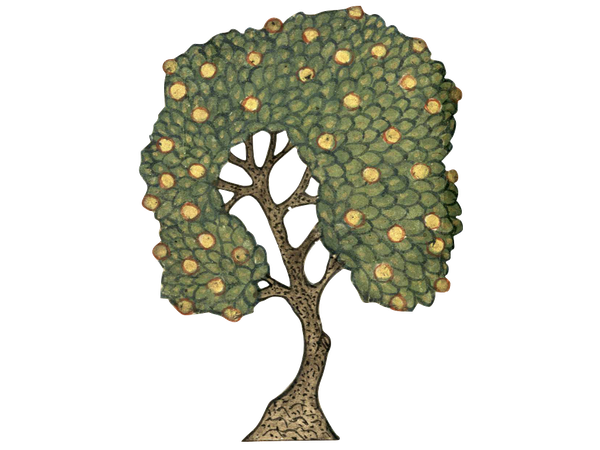
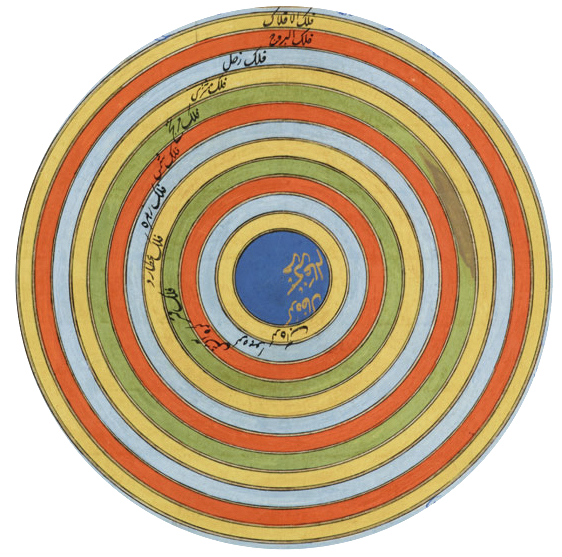

Public Scholarship
Lectures & Talks

Imagining the Medieval World
Panel discussion with Joshua O’Driscoll and Asa Mittman on the exhibition The Book of Marvels: Imagining the Medieval World.
Watch →
Can the Quran be Translated? Debates in Early Islam and Today
On the history of Quran translation and the contested theological status of vernacular Persian renderings.
Watch →
Exploring Islamic Maps at the Beinecke and Beyond
On medieval Islamic cartography, held in conjunction with the World in Maps (1400–1600) exhibition at the Beinecke Rare Book and Manuscript Library.
Watch →
Stranger Matter: The Weird and Paranormal in Islamic Natural Philosophy
On the strange and uncanny in classical Arabic and Persian cosmographical compendia.
Watch →
Gestures of Perplexity in Persian Compendiums of Wonder and Rarity
On natural history, wonder, and rarity in Persian intellectual tradition.
Watch →
On the History of Religions and the Study of Islam
On the place of Islamic studies within the modern history of the study of religion.
Listen →Podcasts
Wonders and Rarities
Listen →
A World of Wonders: A Muslim Guidebook to the Cosmos
Listen →
Wonders and Rarities
Listen →
Review Essays
“Imperfect States”
PDF →
“On Reading the Library of Arabic Literature”
PDF →
“Qurʼanic Studies and the Literary Turn”
PDF →
Museum Consulting
Wonders of Creation: Art, Science, and Innovation in the Islamic World
Exhibition curated by Ladan Akbarnia →
